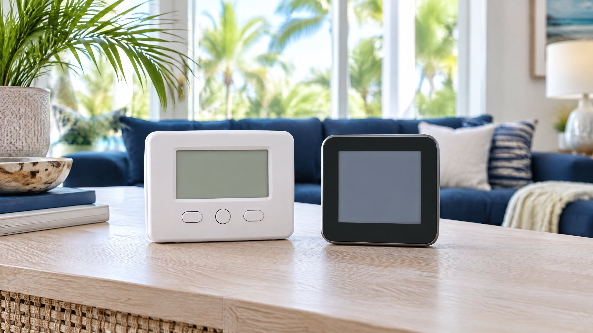

Choose a thermostat around the HVAC system and the household—not around the app screenshot. A repeating schedule can be useful without connected features. Remote access can be useful without automatic learning. Neither choice fixes an equipment fault or establishes compatibility just because the new control fits where the old one was mounted.
This guide helps Tampa and North Tampa homeowners compare a conventional programmable control with a connected smart control before purchase. It is not a wiring guide, a recommendation for a particular brand, or a promise about electricity bills. Keep the equipment model numbers, existing control and the features you want at the center of the decision.

In this guide: Definitions · Equipment compatibility · Heat Pump controls · Humidity features · Connected ownership · Compare scopes · Handover checks
What Is the Difference Between Programmable and Smart?
A programmable thermostat follows a schedule you create. You select temperature changes for predictable periods, such as home, away and sleep. DOE describes scheduled adjustments and notes that some electronic controls also use adaptive recovery to manage the transition between temperatures. A schedule and adaptive recovery are different capabilities. [1]
A smart thermostat adds connected control. Depending on the product, that can include changing settings through a smartphone, occupancy-based adjustments or other supported features. ENERGY STAR distinguishes static user programming from controls that learn preferences or adjust to conditions. It also explicitly says geofencing is not required for certification. [2]
Scheduling, Wi-Fi, learning and occupancy features are not interchangeable. A connected control may allow you to manage your own schedule without learning one for you. A simpler control may perform the repeating schedule you need without an account. Compare the exact feature list and owner instructions rather than treating the word “smart” as a complete specification.
Start With the Household Routine
Write down the changes you actually want to automate. A consistent workweek may need only a reliable repeating schedule. A household with changing hours may value remote adjustments. Someone managing a second home may want connected access, but should separately confirm the notifications, access permissions and local behavior the chosen product supports.
Consider who will use the control. Can everyone make a normal temperature change at the wall? Will the schedule be understandable to another occupant? An elaborate feature that the household disables is not automatically more useful than a simple schedule they maintain. Convenience should fit daily use, not just the initial demonstration.
Decide whether you want a manually maintained schedule or a supported adaptive strategy, then ask how temporary changes interact with it. Our explanation of lower temperature targets and cooling speed addresses a different issue: selecting a much colder target is not a substitute for understanding equipment operation.
Identify the Existing Control System Before Shopping
Many conventional central systems use low-voltage thermostat wiring. Resideo explains the different roles of power, common, fan, cooling and Heat Pump terminals. It also warns that some labeled terminal arrangements may indicate a communicating system rather than a conventional replacement application. [3] This is a reason for a compatibility check, not a request to move wires.
Give the contractor the existing thermostat model and the indoor and outdoor equipment model numbers. Ask what control arrangement the equipment is designed to use and how the proposed product's compatibility will be verified. A general brand list, a similar faceplate or an online statement about working with most systems does not settle the match in your home.
Confirm the number and type of functions the control must support: cooling and heating stages, fan operation, any zoning and accessories. The question is not simply whether it can turn cooling on. It is whether the proposed installation retains the functions the equipment and household require.
Why Communicating and Variable-Capacity Systems Need Attention
Some systems use a manufacturer-specific communicating control. Carrier's Infinity documentation provides an example: compatible components exchange commands, operating conditions and data through an ABCD communication bus, and the system control replaces a conventional thermostat for that arrangement. The document describes a particular product family, not every Carrier or other-brand installation. [4]
On those systems, the control can be part of coordinating capacity, airflow, zoning, humidity functions and diagnostics. ENERGY STAR says variable-capacity Heat Pumps and air conditioners generally perform well with a manufacturer-recommended thermostat. [2] Do not assume a universal connected replacement preserves every existing function just because basic cooling is possible.
Ask which functions remain, which change and whether the equipment maker supports the proposed control or interface. Our single-stage, two-stage and variable-speed AC guide explains equipment differences. A thermostat purchase should follow those requirements rather than silently changing the system's intended control strategy.
Check Power Requirements Without Guessing at Wiring
Connected electronics need an appropriate power arrangement. For a conventional system, Resideo identifies C as common and explains that thermostat terminal roles are distinct. [3] The presence of a cable at the wall does not establish that a usable common connection or an approved power solution is available throughout the system.
Ask what the exact thermostat requires and how that requirement will be met. Do not assume every smart control needs the same wiring, every adapter fits every system, or a spare-looking conductor is ready to use. Any wiring, power accessory or equipment-side work belongs in the professional scope and the model's instructions.
Keep power provision separate from internet access. A Wi-Fi password cannot solve an unsuitable electrical supply, and an appropriate power connection does not establish that remote app features will work on the home's network. The proposal should explain both without treating either as a minor afterthought.
Confirm Heat Pump and Backup-Heat Functions
A Heat Pump control needs to support the installed heating configuration, not just conventional AC cooling. Resideo's terminal guidance distinguishes the reversing-valve function from auxiliary heating functions. [3] Ask the contractor to identify the Heat Pump type, any backup heat and the proposed control's supported configuration before changing devices.
Tampa's comparatively mild winters do not make backup controls irrelevant. A thermostat that appears compatible during a cooling demonstration still needs appropriate heating setup. Ask how normal heating, any auxiliary heat and any supported emergency mode will be explained and verified for the actual system. Do not use a generic app label as proof of correct staging.
For an existing AUX indicator, our thermostat AUX heat article explains the separate operating question. This buying guide does not prescribe a setback, backup-heat threshold or a new control based on that message alone. Compatibility and symptom diagnosis remain different tasks.
What Can Humidity Features Actually Do?
In Tampa, ask about humidity as well as temperature. Carrier's communicating-control document includes supported humidification and dehumidification functions within its system arrangement. [4] That is a model-specific example, not proof that every connected thermostat can command every HVAC or accessory device.
A thermostat is not moisture-removal equipment. A humidity display reports information; a humidity setting may request a response from compatible equipment. Neither feature turns the wall device into a whole-home dehumidifier. Ask what equipment responds, how the feature operates and what conditions the installer will use to evaluate it.
If the home remains humid, assess the actual moisture problem rather than choosing by screen appearance. Our whole-home dehumidifier versus AC guide covers supplemental control. A control change should not be presented as the cure for every humidity concern, especially before equipment operation and the home's moisture conditions are understood.
What Does ENERGY STAR Certification Establish?
ENERGY STAR explains that certified smart thermostats demonstrate performance using aggregated real-home data rather than just a laboratory estimate. The service as well as hardware matters. Its FAQ also identifies climate, comfort preferences, occupancy and equipment as factors affecting results. [2]
Certification is useful information, but it is not a guarantee of a particular Tampa household's bill reduction or a replacement for compatibility checks. If someone quotes expected savings, ask what assumptions they used about your existing schedule, equipment and use. This guide provides no universal savings percentage, price comparison or incentive eligibility claim.
Compare Internet-Loss Behavior and Account Ownership
Internet-loss behavior is product-specific. Before purchase, read the owner manual for wall operation, stored schedules and the features that need a network or cloud connection. Ask separately about app changes, occupancy features, alerts and integrations. Do not assume losing internet disables all local control—or that every connected feature continues unchanged.
Plan who owns the account and who is allowed to make changes. Ask how another household member is invited, how unwanted access is removed and how the device is transferred when the home changes hands. These are purchasing questions, not a prediction that a particular service will disappear.
ENERGY STAR encourages customers to consult their smart-thermostat provider about data security and privacy. [2] Read the provider's privacy notice and sharing choices, including any dealer access you are considering. Use a distinct strong password and available sign-in protections. Do not assume every provider collects or shares the same information.
Confirm what is included in the app service and what needs an optional plan or accessory. Record the support contacts and the process for changing phones, network details or ownership. Connected convenience is more useful when those responsibilities are understood before installation.
Compare Written Proposals on the Same Basis
Ask for the exact control model, supported equipment combination and any power, interface or accessory work. A product price alone is not a complete installed scope. Separate optional convenience features from requirements needed for the system to function as designed, and ask about ongoing charges without assuming either option has them.
On a phone, scroll the table sideways to read both choices.
| Decision | Programmable control | Connected smart control |
|---|---|---|
| Household routine | Repeats a schedule you maintain; verify override behavior | May add remote or adaptive changes; verify the actual feature set |
| Equipment match | Must support the installed functions and configuration | The same requirement; Wi-Fi does not establish compatibility |
| Power and interfaces | Follow the selected control and equipment requirements | Identify continuous power and any approved interface or accessory |
| Humidity and staging | Confirm what the exact control can manage | Do not equate a humidity display or app label with supported equipment control |
| Ownership | Check local use, schedule instructions and maintenance needs | Also check network-dependent features, account access, privacy and transfer |
What Should Handover Demonstrate?
Ask the installer to demonstrate the supported cooling, heating, fan and any accessory functions agreed in the scope. Confirm the schedule, overrides and how to return to the intended program. For a communicating system, ask which existing equipment features were retained. Record the equipment and control model numbers with the operating instructions.
For connected control, practice a wall change and an app change, confirm the correct account owns the device and review connection-dependent behavior in the product documentation. Avoid a handover that consists only of showing a screen. Household usability and the actual equipment response both matter.
If your present complaint is cooling that continues after Off, read what to report when AC does not shut off at the thermostat. Buying a new control is not the diagnosis. On The Way offers thermostat repair assessment so a recommendation can follow the installed system and the observed response.
Frequently Asked Questions
Is a smart thermostat always the better choice?
No. A repeating programmable schedule may meet the household's needs. Connected access can add useful flexibility when the occupants will use it and the exact control is compatible with the equipment. Compare supported functions rather than assuming a universal winner.
Does every smart thermostat need a C wire?
Do not assume a universal power requirement or adapter solution. Check the selected thermostat's instructions and the installed equipment. A professional should identify how the required power will be provided and whether that arrangement is approved for the system.
Can I replace a communicating thermostat with any Wi-Fi model?
No. A communicating control can coordinate equipment features that a conventional replacement does not retain. Verify the equipment manufacturer's supported control or interface and identify which functions would remain before choosing a replacement.
Will a humidity setting replace a dehumidifier?
No. A thermostat can display humidity or request a response from compatible equipment; it does not remove moisture itself. Confirm the actual equipment response and assess persistent humidity separately.
Will a smart thermostat keep every feature without internet?
That is product-specific. Review the exact manual for local wall operation, stored schedules and features that require a network or cloud service. Do not assume either complete shutdown or unchanged connected operation.
Sources
- DOE Building Science Education: HVAC Programmable Thermostats — schedules, adaptive recovery, occupancy and remote control.
- ENERGY STAR: Smart Thermostat FAQs — static and adaptive controls, optional geofencing, variable-capacity compatibility, certification and provider privacy questions.
- Resideo: Thermostat Terminal and Compatibility Guidance — conventional power and control functions, Heat Pump terminals and communicating-system cautions. Cited for compatibility, not homeowner wiring steps.
- Carrier: Infinity System Control Documentation (PDF) — a manufacturer-specific example of communicating control and supported system functions, not approval for another model or installation.
Editorial Source Review & Publisher
Published by On The Way Heating & Air using the federal and manufacturer sources above. The guide compares purchasing questions, not brands or verified customer results. Dustin Miller began HVAC work with his father in 2006; that family-rooted background does not replace model-specific documentation or an assessment of the home's controls.